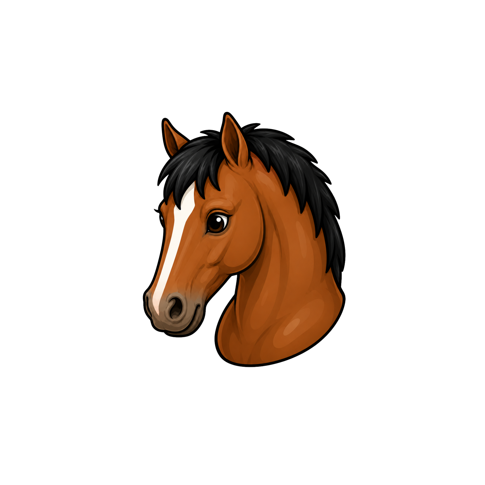

Background
EquiBalance was created by Dannie Trader as part of a capstone project focused on designing a web-based application prototype.
The project required the development of an original app concept, including user needs, technical requirements, website planning,
prototype features, and a clear explanation of how the system would support its intended audience.
As the founder and prototype developer, Dannie brought together a love of horses, an interest in equine
nutrition, and a growing background in technology, UX design, and web development.

Motivation
Horse owners often have to do extensive research to make sense of hay tests, feed labels, supplements, marketing
claims without a clear way to see how everything fits together. EquiBalance helps organize that information
in one place so users can better understand their horse’s diet, spot possible gaps, and make more informed
feeding decisions.

Goal
A Forage-First Approach
Forage is the foundation of the horse’s diet, so EquiBalance begins there.
Hay and pasture can provide a large portion of a horse’s daily nutrients, but availability and reliable nutrient analysis
can also vary widely. Without looking at forage first, it is easy to over-supplement, under-supplement, or miss important
gaps entirely. EquiBalance encourages users to think about the whole diet, not just individual products. By starting
with forage and then looking at feeds and supplements in context, horse owners can make more thoughtful decisions about what
their horse may actually need.